2024
[48] Prospects of Band Structure Engineering in MXenes for Active Switching MXetronics: Computational Insights and Experimental Approaches, Materials, 12월 (2024)
Ganapathi Bharathi, Seongin Hong*
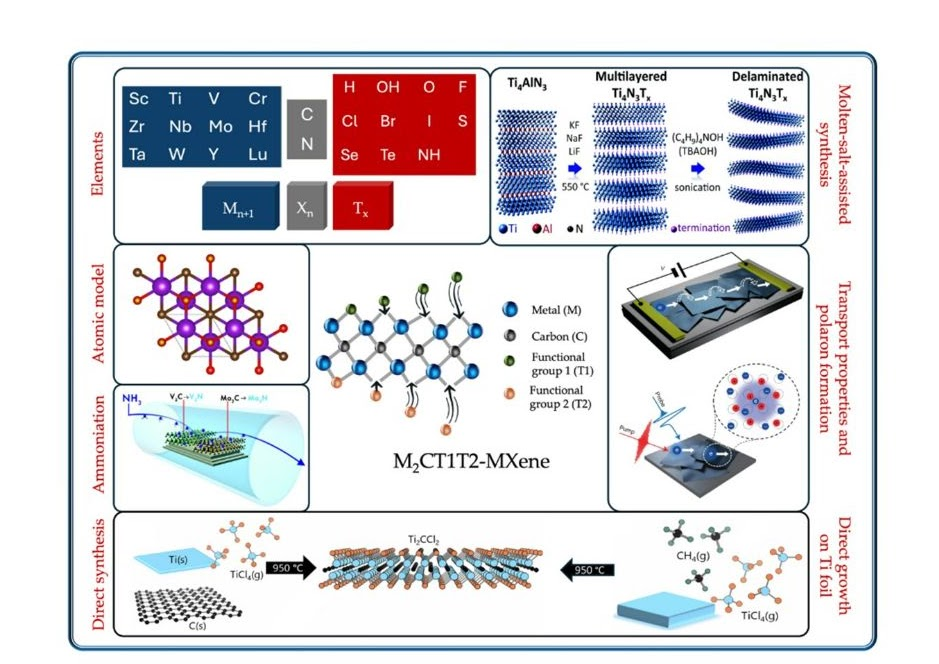
[47] Advances in 2D Molybdenum Disulfide Transistors for Flexible and Wearable Electronics, Micromachines, 12월 (2024)
Kyungwon Kwak†, Hyewon Yoon†, Seongin Hong*, Byung Ha Kang*
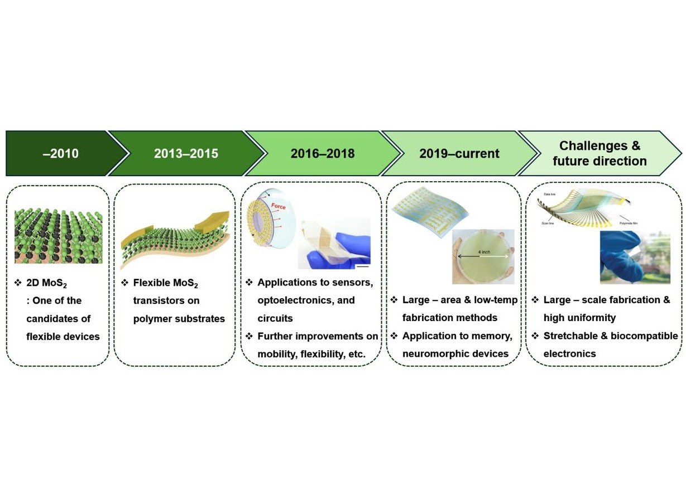
[46] Recent Advancements in 2D Material-Based Memristor Technology Toward Neuromorphic Computing, Micromachines, 11월 (2024)
Sungmin Park†, Muhammad Naqi†, Namgyu Lee, Suyoung Park, Seongin Hong*, Byeong Hyeon Lee*
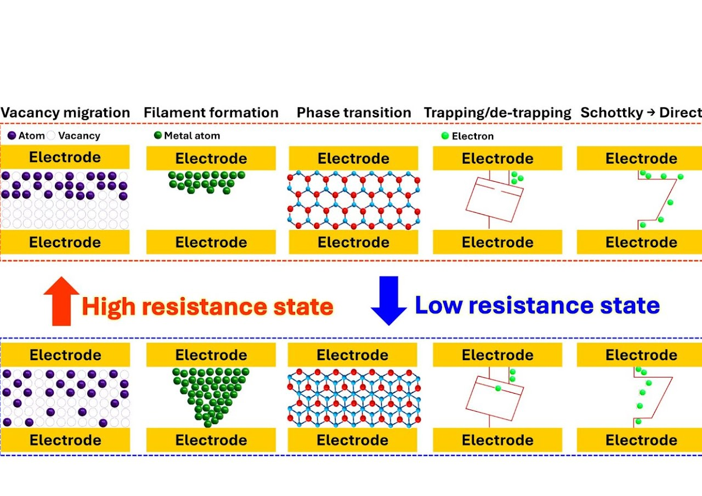
[45] Highly improved photocurrent of a flexible MoS2 photodetector via backside Al metal mirror and its in- and outward folding states, RSC Advances, 11월 (2024)
Hyewon Yoon, Seongin Hong*
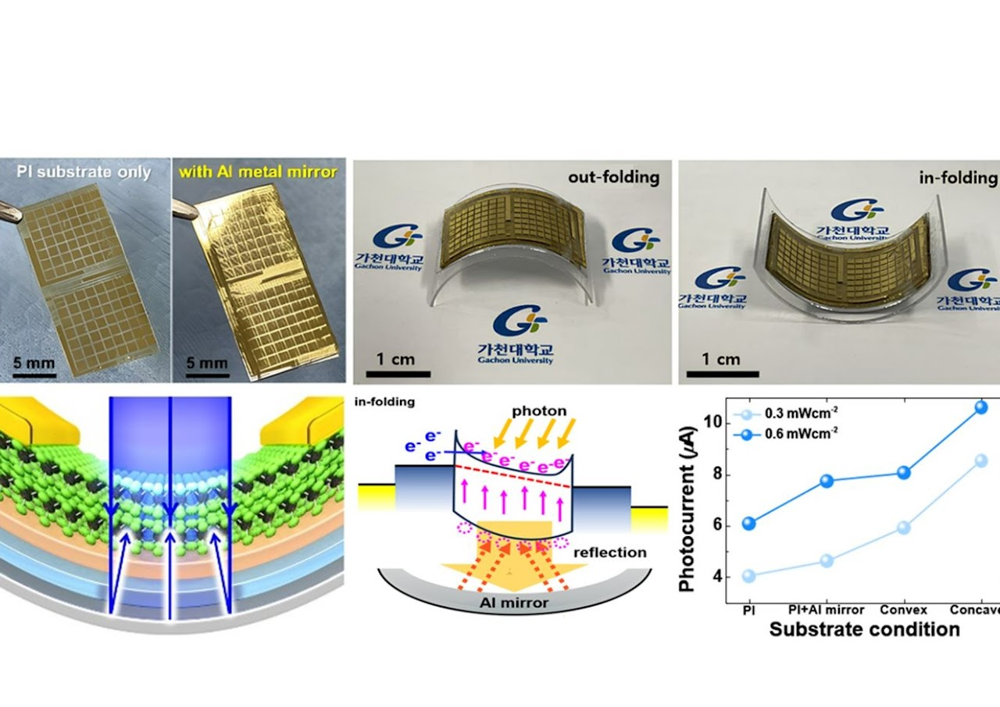
[44] Low-Cost, High-Efficiency Aluminum-doped Zinc Oxide Synaptic Transistors: Blue LED Stimulation for Enhanced Neuromorphic Computing Applications, Biomimetics, 9월 (2024)
Namgyu Lee, Pavan Pujar*, Seongin Hong*
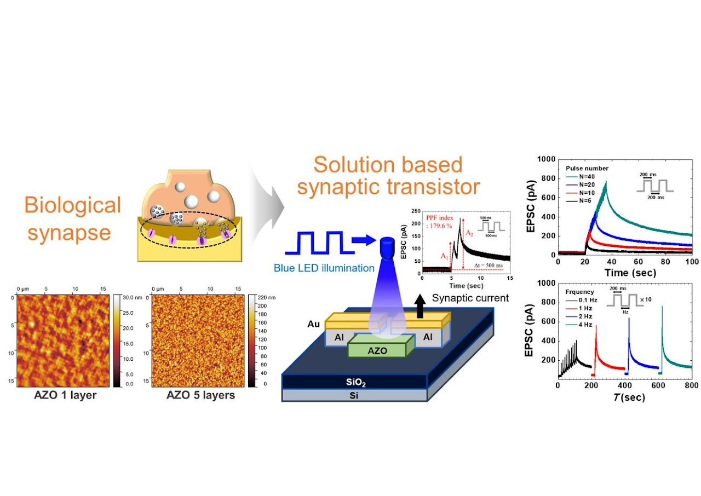
[43] Thermally stable photosensing using poly(methyl methacrylate)-coated MoS2 phototransistor for improved imaging reliability, Physica Scripta, 8월 (2024)
Jaewan Park†, Sungmin Park†, Seongin Hong*
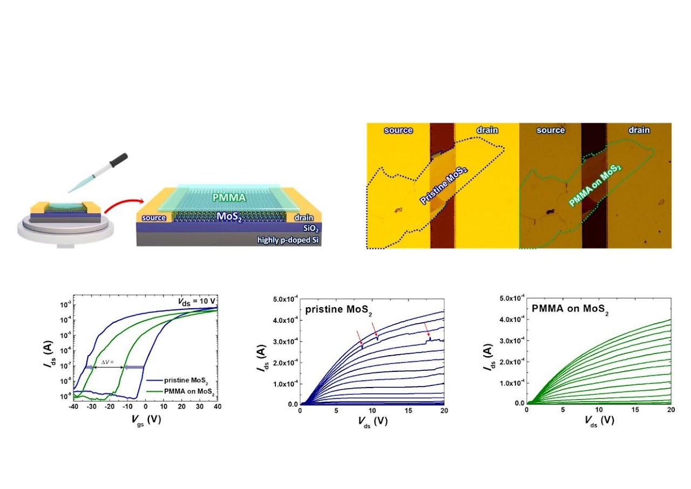
[42] High-Photosensitivity WSe2 Phototransistor with Electrically Self-Isolated C8-BTBT as a Light Absorption Layer, ACS photonics, 3월 (2024)
Jaewan Park, Seongin Hong*
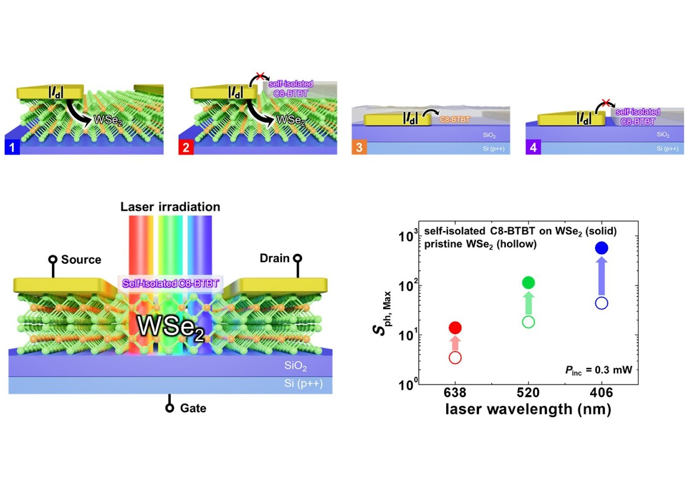
[41] Potential usage of cesium manganese halide for multi-functional optoelectronic devices: Display & photodetector application, Chemical Engineering Journal, 1월 (2024)
Jung Hyeon Yoo†, Seok Bin Kown†, Jaewan Park†, Seung Hee Choi, Ho Chan Yoo, Bong Kyun Kang, Young Hyun Song*, Seongin Hong*, Dae Ho Yoon*
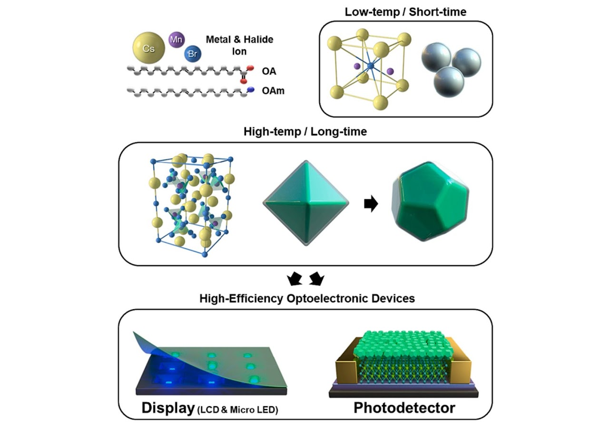
[40] Nanoristors: highly uniform, sub-500-millivolt, large-scale, and robust molybdenum disulfide nanograined memristors, Journal of Materials Chemistry C, 3월 (2024)
Gunhoo Woo, Hyeong-U Kim, Byung Chul Jang, Muhammad Naqi, Seongin Hong, Arindam Bala, Seunghun Kang, Yunseok Kim, Sunkook Kim, Taesung Kim, Jae-Joon Kim, Hocheon Yoo
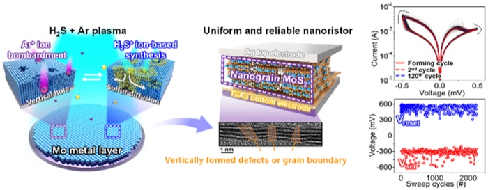
[39] Molecularly reconfigurable neuroplasticity of layered artificial synapse electronics, Advanced Functional Materials, 4월 (2024)
Dhananjay D Kumbhar, Yeonjin Je, Seongin Hong, Donghyun Lee, Hyeongtae Kim, Mi Ji Kwon, Su‐Yeon Cho, Do‐Hyeon Lee, Dong‐Hyeok Lim, Sunkook Kim, Jun Hong Park
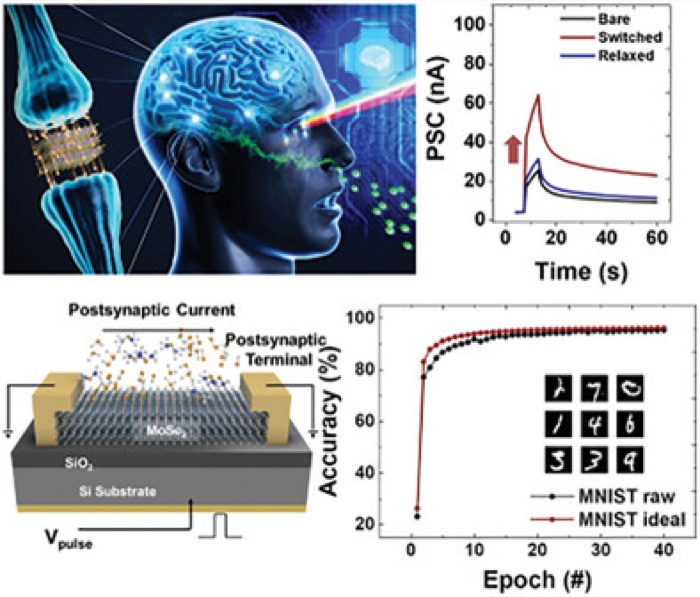
[38] Effect of the oleylamine on non-stochiometric crystal growth for Cs-Cu-X(X = Br, I) ternary system based mircocrystal, Materials Today chemistry, 11월 (2024)
Jung Hyeon Yoo, Ho Chan Yoo, Jaewan Park†, Geon Jong Yu, Seung Hee Choi, Young Hyun Song, Sie-Wook Jeon, SangHwan Bak, Seongin Hong, Seok Bin Kwon, Dae Ho Yoon
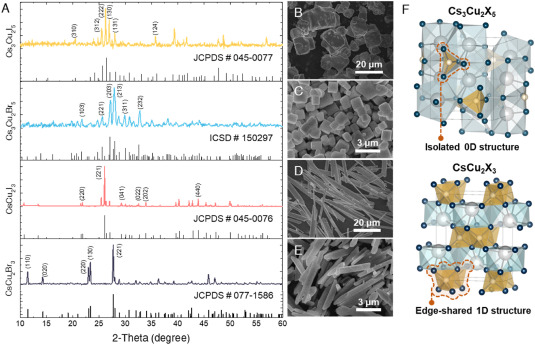